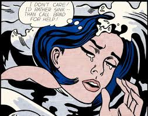
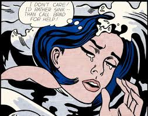

Andy Warhol

Seguro que en alguna ocasión has visto los famosos retratos de Marilyn Monroe con diversas tonalidades. Su autor fue Andy Warhol. Este conocido artista del pop art destacó por realizar obras de diferentes celebridades, como Grace Kelly o Elvis Presley, entre otros. Además, otra de sus inspiraciones fueron los anuncios publicitarios, donde destaca su obra de las latas de sopa Campbell. Su estudio, situado en Nueva York, tuvo multitud de visitas de intelectuales y artistas.


Roy Lichtenstein

Nacido en 1923, Roy Lichtenstein fue uno de los impulsores del movimiento. Este artista pop art cuenta con un estilo muy peculiar caracterizado, principalmente, por las interpretaciones a gran escala de sus cómics y la parodia. Utilizaba una técnica de puntos para crear sus dibujos animados, y empleaba generalmente colores primarios. Durante los últimos años, tuvo mayor presencia a nivel social. De hecho, en España se encuentran dos de sus obras.
 

Caracteristicas del Pop Art
- Intención de acercar el arte al mundo y a la realidad.
- Empleo del lenguaje figurativo y realista para mostrar la realidad del mundo.
- Rechazo del expresionismo abstracto.
- La temática principal tenía relación con ciudades, cine, televisión, cómics, aspectos sociales, etc.
- Las formas representadas, generalmente, contaban con una escala natural o ampliada.
- Se realizan mezclas y combinaciones de pinturas con objetos de la vida real en la misma obra.
- Entendían los temas representados como justificaciones de la propia pintura y su existencia.
Objetivos Generales y Específicos
FISCHL es una aplicación en desarrollo, por lo cual aún no tiene muchos objetivos para dar una idea del funcionamiento de la aplicación. FISCHL por el momento es una idea, pero con el pasar de los días se va progresando en la idea del funcionamiento de FISCHL. Por el momento se tiene pensado que sea la mejor herramienta administrativa y de confianza.